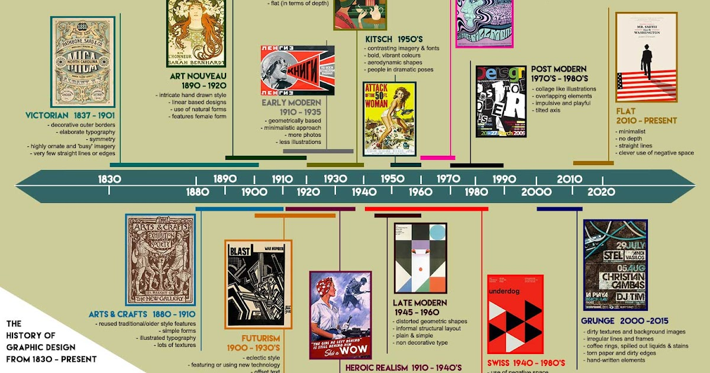

Journey Through Time
Discover how human creativity has evolved from ancient civilizations to the digital age.

Art Through Ages
From cave paintings to digital masterpieces, trace the evolution of human expression.
View Art Timeline →Historical Eras
Explore pivotal moments that shaped civilizations across millennia.
Explore History →Fashion Evolution
Witness how clothing reflects cultural changes through the centuries.
See Fashion →